◆
Pinda Lab
ゲーム・教育・ツール — ブラウザとアプリで届けます
気に入ったら支援していただけると嬉しいです

ゲーム・教育・ツール — ブラウザとアプリで届けます
気に入ったら支援していただけると嬉しいです
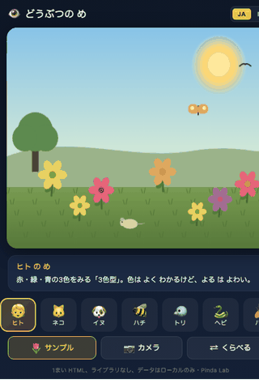
ネコ・ハチ・ヘビ・フクロウ・ハエ — どうぶつ には せかい が どう みえている？5〜10さい むけ、世界の キッズアプリ では めずらしい 「8しゅるいの どうぶつ の め を、おなじ シーン に リアルタイムで かけて くらべる ビジョン・ラボ」を ブラウザで。たいていの 「動物 視覚」 サイト は しゃしん を ならべるだけ。これは ちがう。おなじ おはなばたけ が、ネコ には どう、ハチ には どう、ヘビ には どう みえるかを、おなじ ばめんで ピクセル単位 に へんかん して みせる。ネコ は 2色型（あおと きいろ だけ。あかと みどり が にた色 に）、ハチ は しがいせん が みえて はな に 「みつのみち」 と よばれる かくれた もよう が ぱっと あらわれる、ヘビ は ピットきかん で あたたかい ねずみ・ちょう・たいよう だけが やみの なかに ひかる、ハエ は 4000こ の ふくがん で せかいが ぜんぶ ハニカム タイル に なる、フクロウ は ほぼ モノクロ で よる の ひかり を ぐっと 拡大、トリ は 4色型 で 色 が より こく シャープに みえる。くらべる ボタン で がめん を ふたつ に わって、ヒト と どうぶつ を ならべて みれる。スマホ の カメラ を ひらけば、いま みえている まわり の せかい も そのまま どうぶつ の め に かわる（カメラ えいぞう は はしりません、きろくも しません、ぜんぶ はしりこんだ ローカル しょり）。1まい HTML、ライブラリ なし、データ は ローカル のみ。日本語と English の バイリンガル。Pinda Lab。
▶ ブラウザで遊ぶ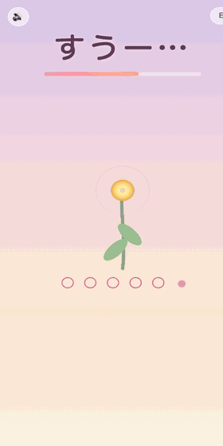
「ふーっ」と いきを はいて、おはなを さかせよう。3〜7さい むけ、世界の キッズアプリ では めずらしい 「マイクで ほんとうに いきを きく こきゅうゲーム」を ブラウザで。たいていの こども向け こきゅう アプリ は まる が ぐるぐる するだけで、ほんとうに はけているか は チェック しない。これは ちがう。すうー（4びょう）→ ふーーっ（6びょう） の リズムで すすみ、ふーっ の あいだ マイクが きみの『ふーっ』を きく。きちんと はけたら はなびらが ひとつ ひらく。5かい くりかえすと、よる の そらが しずかに おりてきて、おはなが まんかい に さく。息を 長く はく ことは 副交感神経 を ゆっくり 動かす——ねるまえ、ふあん な とき、ぐっすり ねむれない ばんに、医師 も すすめる 「のばしの 呼吸」を こども版 にした もの。4-7-8呼吸 は こども には きつい ので、4-6 で やさしく した。マイクが つかえない ときは ボタンを おさえても あそべる。録音 は しない、データは ローカル のみ。1まい HTML、ライブラリ なし、おとは Web Audio で ぜんぶ 合成。日本語と English の バイリンガル。Pinda Lab。
▶ ブラウザで遊ぶ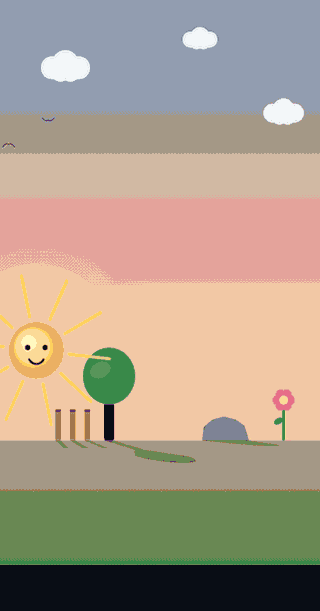
おひさまを ゆびで うごかすと、すべての かげが いっぺんに のびたり ちぢんだり する。4〜8さい むけ、世界の キッズアプリ では めずらしい 「リアルタイムの 影の 物理シミュレーション」を ブラウザで。きや いえや はな の シルエット が、おひさま の いち から ちょくせつ 計算 されて じめん に おちる。3つの モード — じゆうにあそぶ（おひさま を すきに うごかし、かげ の しくみ を じぶんで みつける）、かげあわせ（おてほん の うすむらさき の かげ に じぶん の かげ を ぴったり あわせる、4レベル）、かくれんぼ（もぐらさん は あかるい ところ が きらい — き の かげ で 3びょう かくして あげる、4レベル）。あそぶ うちに、「おひさま が ひくい と かげは ながい」「まうえに あれば かげは みじかい」「ひだり に おひさま → かげは みぎ へ」と いった 日時計（ひどけい）の 直感 が しぜんに そだつ。空 の いろ も おひさま の たかさ で 朝 → 真昼 → 夕焼け に かわる。1まい HTML、ライブラリ なし、データ は ローカル のみ。日本語と English の バイリンガル。
▶ ブラウザで遊ぶ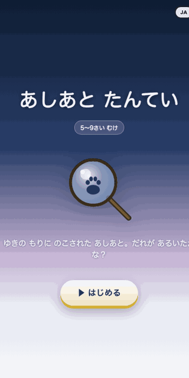
ゆきの もりに のこされた あしあと。だれが あるいた？5〜9さい むけ、世界の キッズアプリ では めずらしい 「ほんものの どうぶつトラッキング」を ブラウザで。8しゅるいの どうぶつ — すずめ・うさぎ・きつね・ねこ・いぬ・しか・くま・りす — それぞれの ほんとうの あるきかたで あしあとが ちらばる。うさぎは うしろあしが まえに くる（バウンド歩行 — とぶ ように はしるから 後足が 前足の そとがわに 着地する）、きつねは あしあとが いちれつ に ならぶ（ダイレクトレジスター — 後足を 前足と おなじ ばしょに おく）、ねこ は つめの あとが ない（あるく とき つめを しまっている）、しか は ハートを 二つに わった ような 偶蹄、くま は 5本ゆびで ヒトと おなじ 蹠行（しょこう）。ゆびで トレイルを なぞって すすみ、おわりで 4つの どうぶつから えらぶ。せいかい すると、その どうぶつが ゆきの うえを あるいて、なぜ そんな あしあと に なるか おしえて くれる。「あしあとずかん」に たまっていき、ぜんいん コンプリート で「こんど ゆきの ひに、おそとで さがしてみよう」。1まい HTML、ライブラリ なし、SVG しか つかわない。日本語と English の バイリンガル。
▶ ブラウザで遊ぶ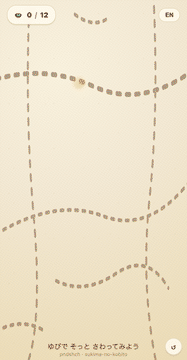
ゆびで そっと「すきま」を なでてみよう。がめんに かすかに はしる ぬいめ の せん。その ところどころに、ちいさな こびと たちが かくれて いる。3〜8さい むけ、いそぐ ひつようも、まちがいもない、ゆっくりした さがしものあそび。タップが せいかい なら ふわっと あらわれて なまえを おしえて くれる。ちかかった けど ハズレ なら、ちらっと かおだけ のぞかせる——その「もうすこし」の あんないだけ で、つぎ どこを なでようか きまる。せかいに は 「やさしく さわる ことに ごほうび が ある あそび」 が ほとんど ない。たいていは はやく タップ する ほうが かつ。だから ぴこ・もも・しゅた・のっぽ・ちまり・ふくろん・みみみ・ぽち・ぐにゃ・かぱ・すぃー・ぼこ——12にん の こびと は、せいかつ の リズムを ひとつ おとして ようやく みつかる。みつけた こ は 「こびとずかん」に たまっていき、ぜんいん コンプリート まで なんにち かかっても いい。スマホの センサー（ジャイロ）が あれば、みつけた こびと は あなたの かたむきに あわせて ふわっと ゆれる。1まい HTML、ライブラリ なし、SVG しか つかわない、データ は ローカル のみ。日本語と English の バイリンガル。
▶ ブラウザで遊ぶ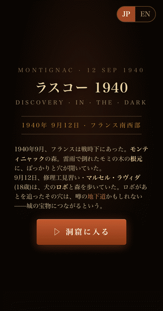
1940年9月12日、フランス南西部、モンティニャックの森。雷雨で倒れたモミの木の根元に、ぽっかりと穴。修理工見習いマルセル・ラヴィダ(18)と犬のロボ。翌日、彼は仲間3人(ジャック15、ジョルジュ16、シモン15)と油ランプを1つだけ手に、ロープで滑り降りた。
10mの斜面を下り、低い天井の通路を抜けて、ランプを上にむけた瞬間——天井から壁から、動物たちが彼らを見おろしていた。17,300年、誰の目にも触れなかった絵だった。
あなたは、その夜のランプを持つ。暗闇に指(マウス)で光を当てると、雄牛・馬・井戸の人が浮かびあがる。3つの間、3分の追体験。
ピカソは1940年代、ここを訪れて言った——「我々は何ひとつ発明していない」。
1948年公開→1963年永久閉鎖。来場者の息と体温が藻を育て、絵を奪った。
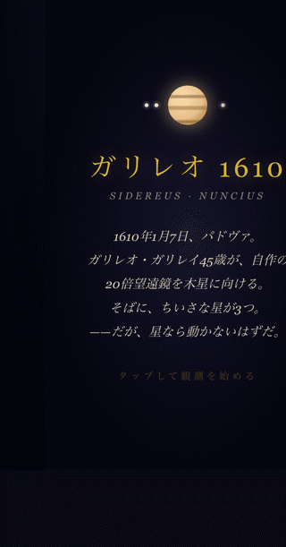
1610年1月7日 夜、パドヴァ。ガリレオ・ガリレイは自作の20倍望遠鏡を木星に向けた。木星の真横に、3つの小さな星が一列に並んでいた。翌日、星は位置を変えていた。さらに翌日、4つになっていた。
あなたはガリレオ。7夜、ノートに点を打ち、毎晩木星のまわりで星が動くのを記録する。これは星ではない——木星をまわる衛星(イオ・エウロパ・ガニメデ・カリスト)。
3月、ガリレオは『星界の報告』を出版。地球が宇宙の中心ではない——という証拠が、はじめて夜空から現れた。3分の天文革命。
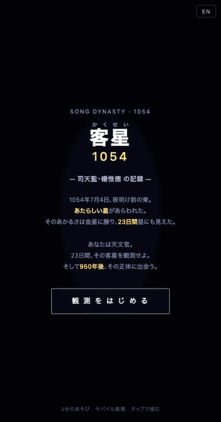
1054年7月4日 夜明け前、宋・開封の司天監。天文官楊惟徳は、おうし座 ζ星のすぐ北西に あたらしい星 をみとめた。あかるさは金星をしのぎ、23日間 昼間にも見えた。夜空には2年ほど残り、やがて消えた。
あなたは天文官。23日間、その客星(かくせい)を観測する。
そして950年後——同じ場所をのぞくと、爆発のなれの果てカニ星雲(M1)が広がっており、中心では中性子星が毎秒30回転していた。3分の宇宙史。
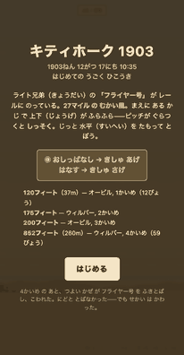
1903年12月17日 10時35分、ノースカロライナ州キル・デビル・ヒルズ。ライト兄弟の 「フライヤー号」が砂丘の木製レールから滑り出す。風は時速27マイルのむかい風。エンジンは12馬力、4気筒。前にあるカナード（前翼）が操縦士の操作で上下するが、これがピッチを不安定にする——機体はふらふらと上下動（ポーパシング）する。
あなたはオービル。胸を下にして下翼に伏せ、左手のレバーで前翼を上下させる。タップで機首を上げ、はなして下げる——うまく保てば飛び続け、外せばしっそくか地面。世界が初めて動力で・持続して・操縦された飛行を見た日、その12秒を再現する。
120フィートでオービル1回目。175フィートでウィルバー2回目。200フィートでオービル3回目。そして852フィート（260m、59秒）でウィルバー4回目——その日の最長飛行。4回目のあと突風がフライヤー号をひっくり返し、機体は二度と飛ばなかった——でも、世界は変わった。
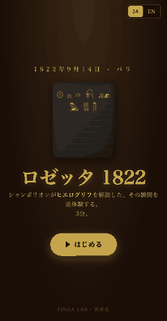
1822年9月14日、パリ。31歳のジャン＝フランソワ・シャンポリオンは、2000年読めなかったヒエログリフに14年挑んでいた。手元にあるのは、ナポレオンの兵が掘り出したロゼッタ・ストーン(196 BC)の写しと、フィラエ島のオベリスクの写し。
カギは王名を囲む楕円——カルトゥーシュ。ギリシア文字の「プトレマイオス」と並べ、7つの音(P・T・O・L・M・Y・S)を1つずつ当てる。次にクレオパトラ。同じP・T・O・Lがそこにもいた。
ヒエログリフは絵ではない——音を表していた。彼は兄のもとへ駆け、"Je tiens mon affaire!"(やった！)と叫び、気を失って倒れた。9月27日、フランス学士院で『ダシエ氏への手紙』を読み上げ、エジプト学が生まれる。3分の追体験。
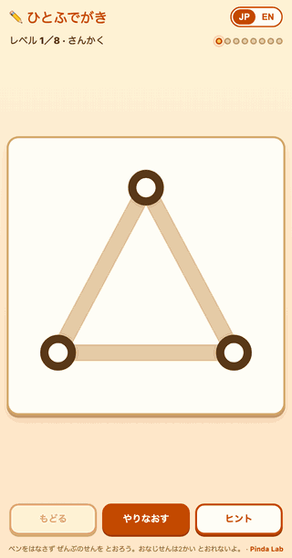
ペンを はなさず、ぜんぶの せんを とおれるかな？5〜10さい むけ、世界の こども アプリ では めずらしい 「ひとふでがき」（オイラー路）パズル。さんかく → しかく → ほし → ちょうちょ → おうち → まど(日) → ふうとう、と かたちが だんだん むずかしく なる 7つの レベル。じぶんで トレースした せん は にじいろに そまり、どこを とおったか ひと目で わかる。「おなじ せんは 2かい とおれない」「ペンを はなして べつの ふしから やりなおすのは ダメ」——この 2つの ルール だけで、ぐっと あたまを つかう。「きすうの せんが でてる ふし は スタートか ゴールに しないと ダメ」という、グラフ理論の 美しい 法則 を、ことばに する まえに ゆびで しる。そして さいごの ステージ ★8: ケーニヒスベルクの 7つの はし。何回 やっても できない——じつは これは 1736ねん レオンハルト・オイラー が 「ぜったいに できない」と しょうめい した ほんものの 数学パズル。「すべての ふしから ぐうすう本 の せんが でているか、きすう本 が ちょうど 2かしょ なら できる。それいがいは ぜったい できない」——グラフ理論 という 数学 が 生まれた しゅんかん。こども に 「数学に は 解けない問題 が ある。それは 諦めじゃ なく 証明 なんだ」を、5分の あそび で つたえる。ヒント ボタン は きすう次数 の ふし を ぴかっと ハイライト。1枚 HTML、ライブラリ なし、SVG 描画。日本語と English の バイリンガル。
▶ ブラウザで遊ぶ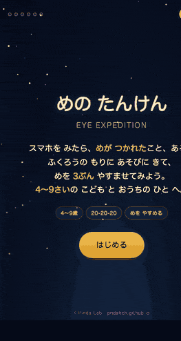
スマホで めが つかれた こども に、めを やすめる ゲーム。4〜9さい むけ、世界の キッズアプリの ほとんどは めを つかれさせるもの——でも これは ぎゃく。がめんから めを はなしたら ごほうびに なる、anti-screen な あそび。3分間、よる の もりで 6つの ステージ：①ふくろうの あいさつ（ゆっくり まばたき）②ホタル おっかけ（スムーズ追視）③ぱっぱの ほし（さっと めを うごかす・サッカード）④ちかい・とおい（ピント調節：スマホを ちかく/とおく）⑤20びょう やすみ（米国眼科学会の 20-20-20 ルール を 体で おぼえる：スマホを よこに かたむけたら カウントダウンが すすむ・うごきセンサーで 検知）⑥よあけ（おつかれさま）。アジアの こども の 近視（きんし） は 過去30年で 何倍にも 増えていて、東アジアの 大学生は 8割以上が 近視。タブレット時代の こどもの目を まもる ための、世界でも まれな『めを やすめる』こども ゲーム。日本語と English の バイリンガル、1枚 HTML、ライブラリなし。
▶ ブラウザで遊ぶ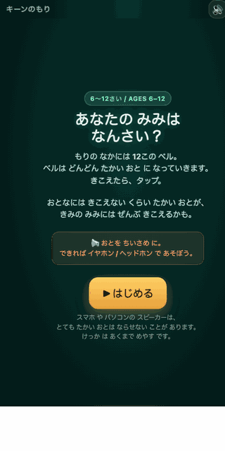
「あなたの みみは、なんさい？」6〜12さい むけ、世界の キッズアプリでも まれな、高周波 聴力テスト を 森の あそびに した もの。もりには 12この ベル。8kHz から 22kHz まで、ベルは どんどん たかい おとに なっていく。きこえたら タップ。きこえない ところで おわり。みみの おく には、おとを きく ちいさい けの ような ぶぶん（ゆうもうさいぼう）が あって、たかい おと を きく ぶぶんが いちばん つかれやすい。だから ほとんどの ひとは、おとなに なるに したがって、たかい おと から きこえなくなって いく。これが presbycusis（かれいせい なんちょう）。こども（〜13さい）は 20kHz ちかく まで、25さい で 18kHz、40さい で 14kHz、60さい で 10kHz が めやす。あなたの けっか と、おうちの ひと の けっか を くらべて ください——「お母さんに きこえない ベルが、ぼくには きこえる！」を、みみで しる。コンビニの 店頭に ながれる「モスキート・トーン」（わかい人だけ きこえる 音）も これと 同じ しくみ。Web Audio の 純粋 サイン波 だけ、ボリューム 上限 を かけて あんぜん に。日本語と English の バイリンガル。1枚 HTML、ライブラリ なし。
▶ ブラウザで遊ぶ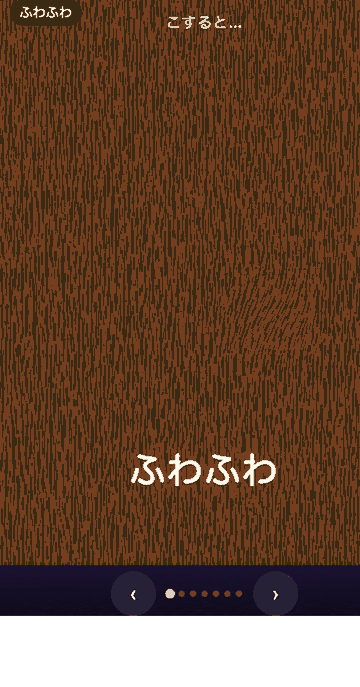
ゆびで がめんを こすってみよう。2〜5さいの まだ ことばを おぼえている さいちゅうの こども むけ、「ふわふわ」「つぶつぶ」「ぱりぱり」「ぬるぬる」「ちくちく」「つるつる」「もこもこ」の 7つの しょっかん を、ゆびで さわって しる おもちゃ。日本語の「擬態語（ぎたいご）」は 世界の 言語のなかでも とびぬけて 多くて、こども が ことばを おぼえる さいしょの 入口に なる——でも ふつうの えほん では「絵を 見る」だけ。これは ちがう。ゆびで こすると、本当に そう 動く・そう 鳴る・（スマホでは）そう ふるえる。「ふわふわ」 を こすれば けが しなって ねこの 顔が でてくる。「つぶつぶ」を こすれば シャボンが ぱちんと はじける。「ぱりぱり」を こすると 枯れ葉が ぱらぱら くだける。「ぬるぬる」の ゼリーは ぐにゃっと 変形する。「ちくちく」は サボトゲ が ぴり、こすり つづければ 花が 咲く。「つるつる」は 氷の 下を 魚が すべる。「もこもこ」の くもを どかせば 太陽が さしてくる。Web Audio で その場 合成 した 音、Vibration API（対応 端末）の ハプティクス、Canvas の 流体的な 反応——ぜんぶ ライブラリなし の 一枚 HTML。せいかいも しっぱいも ない、ボタン式の おもちゃでも 本式の ゲームでも ない、「擬態語を 指で 学ぶ」 ための 純粋な センサリー トイ。読み書き の まえの 子に。日本語と English の バイリンガル。
▶ ブラウザで遊ぶ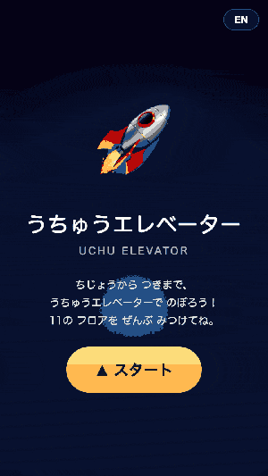
ちじょう から つき まで、ぜんぶ ひとつの エレベーター で。スカイツリー (634m) → ふじさん (3,776m) → ジェットき (11km) → オゾンそう (25km) → ながれぼし (80km) → カーマンライン (100km・ここから「うちゅう」) → ISS (408km) → せいしえいせい (3万6千km) → つき (38万km)。8けたの たかさを ひとつの「のぼる」ボタン で たどる、たいすう スケール の からだ体験。各「フロア」では エレベーターが ちゃんと とまって、その たかさで なに が おきるのか を ひと言 で おしえる。「カーマンライン」を こえた しゅんかん、そらが まっくらに なって ほし が きらり——「あ、いま うちゅう に はいった」が からだ で わかる。5〜9さい の さんすう が まだ つよく ない こども でも、「えらい たかい」と 「こうそく きどう」と 「つき」が ぜんぜん ちがう スケール である こと を、おやゆびひとつ で つかむ。
▶ ブラウザで遊ぶ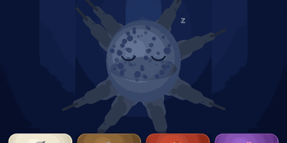
タコは ねむりながら 色を かえる。2023年、沖縄科学技術大学院大学 (OIST) と ワシントン大学の チームが Octopus laqueus の睡眠を 観察。約1時間に1回、約1分間 だけ「アクティブ睡眠」が おとずれ、その 間 皮膚は 起きている ときと 同じ パターン (狩り・カモフラージュ・社会表示) を 見せる。脳活動も 起床時に そっくり——タコは 夢を 見ている のかもしれない。あなたは その タコの 飼い主。1分間 (タコの アクティブ睡眠と 同じ 長さ) だけ、夢の あぶく が ふっと うかぶ。🦀(かりする)・🦈(かくれる)・🪨(いわかげ)・💕(であい) ——その 夢に あう 色を タップすると、タコの 肌が ぐるりと そまる。あさには、6つの 夢の 記録 が 並ぶ。脊椎動物では ない 8本の 腕の 生き物 が、夜の 中で 何を 見ている のか——指先で のぞき込む。
▶ ブラウザで遊ぶ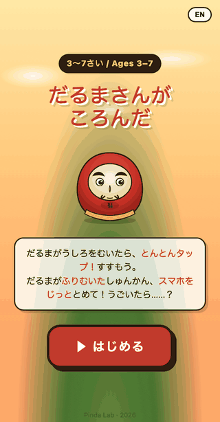
「だるまが むこう を むいたら、とんとん タップ！すすもう。」3〜7さい向け、世界の キッズアプリでも まれな、日本の むかしから つたわる『だるまさんがころんだ』を、スマホの「うごきセンサー」で ほんものの「フリーズ」あそびに した もの。ふつうの アプリ版 は ボタンを ぽちっと おして とまる だけ——でも これは ちがう。だるまが くるりと ふりむいた しゅんかん、スマホ じたい が うごいたら、つかまる。なかみは カメラ では なく、かそくどセンサー。手の ふるえ も、しゃがむ うごき も、ぜんぶ だるま に みえちゃう。タップで すすんで、ふりむいた しゅんかん に じっと。3つの ハート、ゴール の マーク に たどりつけば しょうり。ことばが まだ よめない 3さい でも、だるまの かおが かわる だけ で わかる。「じっとする ちから（ぐっと こらえる ちから）」を、ボタン では なく、ほんとうに からだ で しる。みんなで わいわい、ひとりで しずかに。ちいさい こども が「いう こと を きく」では なく「からだ で とまる」を おぼえる、3〜7さいの セルフコントロール おもちゃ。
▶ ブラウザで遊ぶ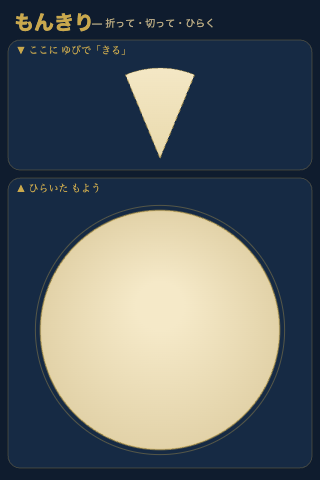
「紙を 三角に 折って、ハサミで ちょん。ぱっと ひらくと——ふしぎな もよう が あらわれる！」4〜9さい向け、世界の キッズアプリでも まれな、江戸時代（17世紀ごろ）から つたわる『紋切り（もんきり）』を、ゆびと 画面で まるごと 体験する 対称あそび。むかしの 日本の おうちには、それぞれの「家紋（かもん）」が あった——梅・松・菊・つる の しるし。その しるしを つくる 方法 が もんきり。三角に 折った 紙の 端を ちょっと 切って ひらくと、おなじ かたち が ぐるりと 8つ・16つ あらわれて、ぴたっと そろった しるし に なる。アプリでは、うえの「おりがみ」に ゆびで すうっ と えがくと、したの えんに 16の おなじ かたち が ぱっと あらわれる——dihedral対称（線対称＋回転対称）の しくみ を、こどもの ゆびで さわって しる。「4・6・8・12」の おりかた を ボタンで かえられるから、シンプルな 八角から 細かい 12角まで。「ひらく」を おすと、ばらばらの コピー が ぱぱぱ と じゅんに あらわれる ふしぎな ひらき アニメ。「ほぞん」で ずかんに たまり、いつでも PNG として ダウンロード。せいかいも しっぱいも ない no-fail な つくる おもちゃで、ことばが まだ よめない 4さいでも あそべる。「対称（シンメトリー）」を、教科書では なく、ほんものの 江戸の 工芸 で、ゆびで しる。
▶ ブラウザで遊ぶ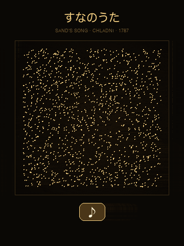
「おとを ならすと、すなが もよう を つくる！」4〜8さい向け、世界の キッズアプリでも まれな、1787年に エルンスト・クラドニ が はっけん した『おとの かたち（サイマティクス）』を、こどもの ゆびで さわって あそぶ おもちゃ。ふつう、おとは 見えない。でも、ふるえる いた の うえに すな を のせて、おとで ふるわせると、すな が ひとりでに うごいて——うつくしい もよう に なる。これは「クラドニ ずけい」と よばれる、200年いじょう まえに かがくしゃが はっけん した ふしぎ。アプリでは、6つの ボタン（ド・レ・ミ・ソ・ラ・ド）が それぞれ ちがう ふるえかた（モード）に たいおう。たかい おと は ほそかい もよう、ひくい おと は シンプルな カーブ。ボタンを おすと サインは の おとが なって、すなが すーっと うごき はじめる——あんちノード（おおきく ゆれる ばしょ）に いる つぶ は どんどん とびはねて、ノード（ゆれが ない ばしょ）に いる つぶ は しずかに とどまる——その けっか が、ほし・かくれた くもの す・つるぎ の ような もよう。「ぱらぱら」ボタンで すな を まきなおせる。せいかいも しっぱいも ない no-fail な じっけん おもちゃ。「おと は かたち を もっている」を、こえと かみと えのぐ では なく、ほんものの ぶつりがく の しくみ で しる。
▶ ブラウザで遊ぶ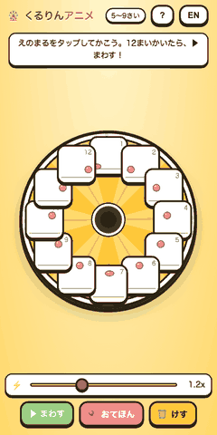
「12まいの えを かいて、まわすと——うごく！」5〜9さい向け、世界の キッズアプリでも まれな、1832年の『フェナキストスコープ（アニメの おじいちゃん）』を まるごと あそびにした、デジタル アニメーション スタジオ。アニメは どうやって うごいて 見える のか？タイムライン や フリップブック では なく、ディスクに ぐるりと 12まいの えを かいて、あかい まど から のぞくと、じぶんの えが ぱらぱらと うごきだす——1832年に ベルギーの 物理学者 プラトーが はつめいした しくみ を、こどもの ゆびで さわって おぼえる。「うすえ（オニオンスキン）」を ON に すると、1まい まえの えが すけて 見え、なぞる だけで なめらかな うごきが できる。さいしょは「たまが バウンドする おてほん」が はいっていて、▶ まわす を おすと、あかい まどに あなたの えが あらわれる——この しゅんかん の おどろき が、アニメーションの しくみ を いっしゅんで わからせる。けして じぶんの アニメ を つくろう。9いろの ペン・うすえ・もどる・はやさ調節 つき。けっか では なく しくみ を おぼえる、no-fail な つくる ゲーム。
▶ ブラウザで遊ぶ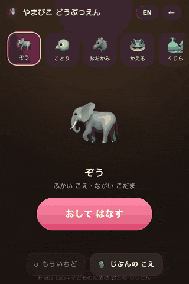
ボタンを おして、こえを だしてみよう。はなすと、どうぶつが あなたの こえで こたえてくれる。3〜7さい向け、世界初級の『どうぶつ acoustic personality』あそび。8ひきの どうぶつ（ぞう・ことり・おおかみ・かえる・くじら・ふくろう・ねこ・すずむし）が、それぞれ ぜんぜん ちがう おとの せいかくを もっていて、あなたの こえに ちがう やまびこを かえす。ぞうは ふかく ゆっくり、ことりは たかく はやく、くじらは うみの なかの ような ふかい ひびき、すずむしは きらきらした かろやか な おと。これは ふつうの ボイスチェンジャー（リアルタイム pitch shift）では なくて、Web Audio の「えんちょう エコー × フィルター × たたみこみ ざんきょう」を どうぶつごとに デザイン した、acoustic-personality おもちゃ。せいかいも しっぱいも ない no-fail toy で、ことばを まだ よめない 3さいでも あそべる。「おとは ばしょによって・どうぶつによって ちがう」を、こえと からだで しる、しずかな じっけん。
▶ ブラウザで遊ぶ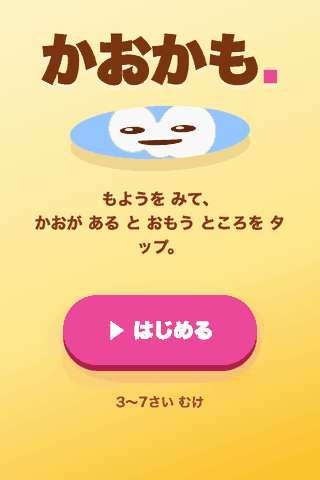
もようを じっと みると、かおが かくれてる。3〜7さい向け、人間がもつ『パレイドリア（無生物に顔を見出す本能）』を、まるごと あそびにした、世界初級の no-fail かんさつ あそび。くも・しみ・きのめ・いし・ゆうぐれ・おちば・かべ・じょうき—8つの procedural patterns（ぜんぶ ランダム生成、同じ もようは ふたつと ない）から、タップした ところに かおが あらわれて、まばたきして、にっこり 笑う。「まちがい」が ない。タップした ところが かならず かおに なる、ぜったい うまくいく あそびだから、ことばを まだ よめない 3さいから あそべる。みつけた かおは ぜんぶ ずかんに たまっていく—『じぶんが 見つけた もの』が ふえていく ちいさな よろこび。スクリーン疲労時代に生まれた、勝ち負けの ない、観察と 想像の あそびば。
▶ ブラウザで遊ぶ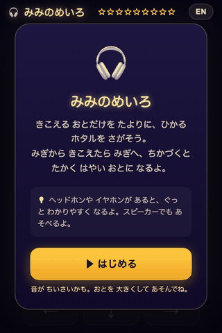
きこえる おとだけを たよりに、ひかる ホタルを さがそう。6〜9さい向け、目では なく『みみで 見る』空間音響あそび。ホタルは ステレオパン（みぎ／ひだり）・おんりょう・たかさ（220〜880Hz）・なる はやさ の4つで じぶんの ばしょを 知らせる。あかるい→うすやみ→まっくら の3レベル スカフォールドで、6さいでも スタートでき、だんだん 音だけで さがせる ように なる。ヘッドホンが ベスト だけど、スピーカーでも わかる モノラル フォールバック つき。リズム ゲームでも 音あて ゲームでも ない、世界初級の キッズむけ 空間聴覚 トレーニング。
▶ ブラウザで遊ぶ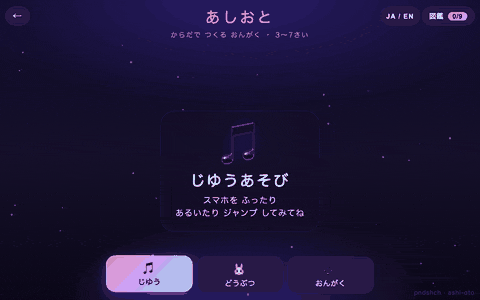
スマホをもって、はねたり、あるいたり、ゆれたり——画面はタップしない。うごきがおんがくになる、3〜7さい向けの『からだ＝楽器』あそび。うさぎはぴょんぴょん、ぞうはドシン、ちょうちょはふわっと、へびはじっと…9種類のどうぶつのリズムを自分のからだで再現するとクリア＝図鑑に集まる『どうぶつのリズム図鑑』モード搭載。加速度センサーが「ジャンプ」「あしおと」「ゆれ」「スピン」「停止」を聞き分けて、それぞれちがう音色（ピアノ・ベル・ドラム・パッド）と光（花火・足あと・きらめき・虹のスパイラル・蓮の花）に変換。受動的なタップではなく、からだぜんぶで遊ぶ──スクリーン疲労時代に生まれた、運動センサーで遊ぶキッズ音楽図鑑。
▶ ブラウザで遊ぶ
コウモリは おみみで ものを みているんだって！4〜8さい向けの エコーロケーション あそび。まっくらやみの どうくつで がめんを タッチすると、おとの なみが ひろがって いく。なみが あたると、いわや ホタルが 一しゅん ひかるよ。ひかった ホタルを すかさず タッチで たすけよう。なみ・じかんで★3つを ねらえる3レベル。コウモリと イルカが 音波（おんぱ）で せかいを みている しくみを、いっしゅんの ひらめきで 体験できる、世界初のキッズむけ ソナー パズル。
▶ ブラウザで遊ぶ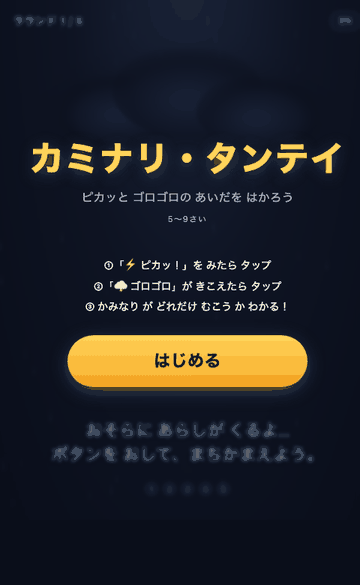
ピカッ → ゴロゴロ の あいだを はかれば、雷までの きょりが わかる！光は秒速30万km、音は秒速340m。実際の嵐でも使える物理の体験ゲーム。5〜9さい。
▶ ブラウザで遊ぶ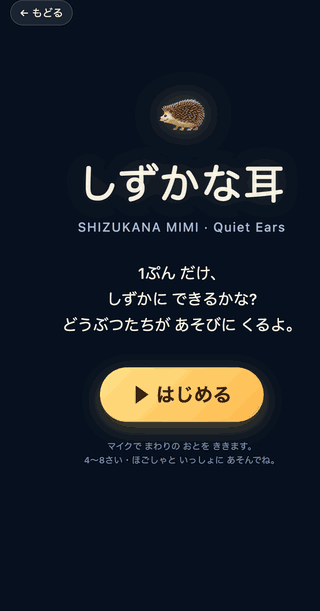
1ぷんだけ、しずかに できるかな? 4〜8さい向け、世界中の こども向けアプリで初めての「しずけさを ごほうびにする」ききみみゲーム。マイクで まわりの音を きいていて、しずかな ほど 月が ひかり、ほしが あらわれ、はずかしがりやの どうぶつ7ひき（🦔🐰🦉🐱🦊🐢🦌）が もりに あつまる。おとが すれば どうぶつは かくれ、メーターは へる。60びょう しずかに できれば、その60秒の ろくおんを 再生して、自分の おへやの「しずけさの きしつ」を きくことが できる——とけいの 音、せんぷうきの ハミング、とおくの 鳥。さわがしい こども向けアプリの 解毒剤、能動的に きく ちからを そだてる メディテーション系の あたらしい教育ツール。
▶ ブラウザで遊ぶ
こえを ふきこむと、せかいで ひとつだけの モンスターが うまれる！3〜7さい向け、自分の声から生まれる生きもの図鑑。たかい こえ・ひくい こえ・おおきい こえ・ちいさい こえ——声の高さ・大きさ・かがやき・ゆれ・長さの5つを音響解析して、それぞれにぴったりの色・形・もよう・足の数のモンスターを生成。マイクへの自由な発声を楽しみながら、自分だけの「こえずかん」を増やしていく、世界初の声→生きもの ジェネレーティブ図鑑。
▶ ブラウザで遊ぶ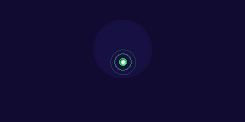
ゆびで えを かくと、おとが うまれる！4〜9さい向けの新しい創作あそび。うえに かけば たかい音、したに かけば ひくい音——画面の縦位置がそのままピッチになる、絵と音楽がひとつになる体験。ぴあの・さくら（こと）・きらきら・だいこの4音色、五音音階だから何を描いても気持ちいい音になる。▶ボタンで描いた絵をアニメ＋音で再生、PNG保存も。
▶ ブラウザで遊ぶ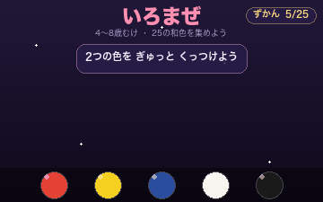
2つの色を ぎゅっとくっつけると、あたらしい色が うまれる！4〜8歳むけ、日本の伝統色（和色）を 25色集める色あそび実験室。あか＋しろ＝桃色（ももいろ）、桃色＋しろ＝桜色（さくらいろ）。「やまぶき」「あさぎ」「うぐいす」など、まぜないと出会えない色がある。読みかなつき、保存対応。
▶ ブラウザで遊ぶ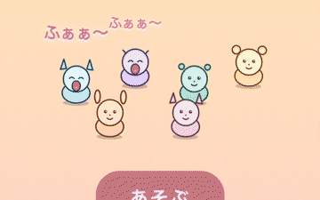
ひとりがあくびすると、まわりにもうつる！キャラクターをタップすると、あくびがじゅんばんに広がっていく。みんなねむったらクリア。3〜7歳むけ、伝染現象を遊びにした連鎖パズル。
▶ ブラウザで遊ぶ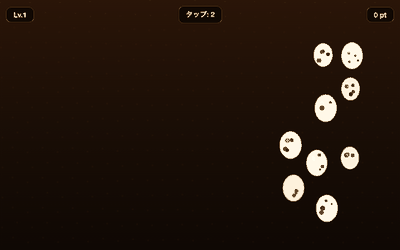
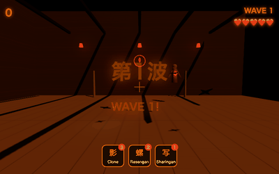
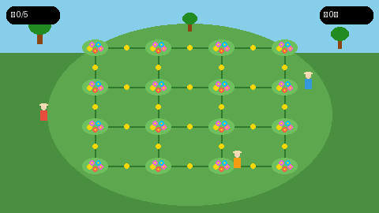
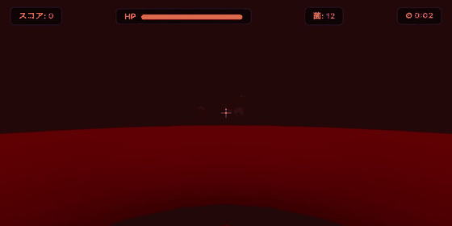
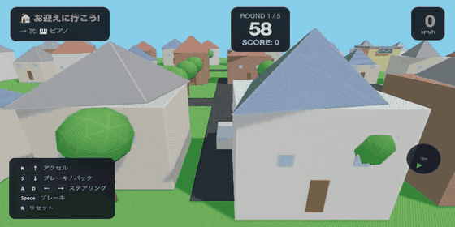
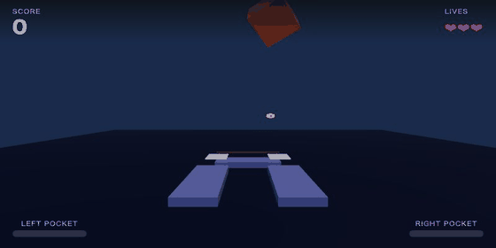
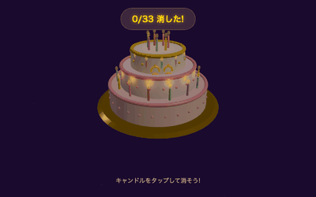
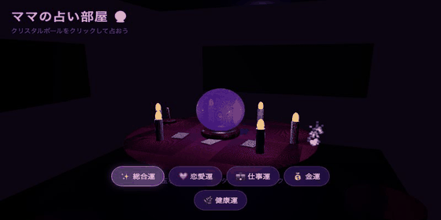


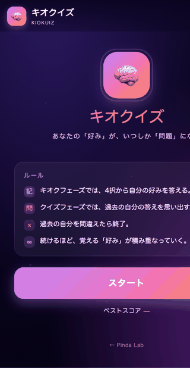
最初は「朝ごはんは？」「コーヒーは？」と、4択であなたの好みをただ答えるだけ。でも気づくと、過去の自分の答えを思い出すクイズフェーズが交ざりはじめる。「あれ、自分はサーモン派だっけ？マグロ派だっけ？」——間違えたら終了。続けるほど抱える「好み」が増え、自分が誰だか分からなくなっていく、4択メモリーゲーム。
▶ ブラウザで遊ぶ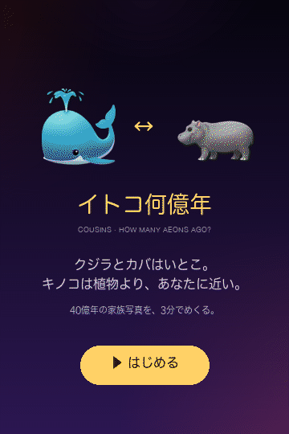
クジラの一番近い親戚は、海の中にはいない——カバだ。キノコは植物よりあなたに近い。動物と菌類は11億年前に同じ枝から分かれた。ふたつの生き物の「最後の共通祖先」がいたのは何年前？ 1百万年前から40億年前までの対数スケールを指でなぞる、5ラウンドのディープタイム推定ゲーム。歩いている犬も、皿のトマトも、靴の中の足も——全員、いとこ。距離が違うだけ。
▶ ブラウザで遊ぶ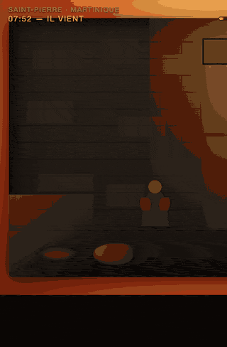
1902年5月8日 7時52分、マルティニーク島サン・ピエール。プレー山が割れ、時速670km・1000℃の火砕流が90秒で街を呑んだ。約28,000人が死んだ。街の中心で生き残ったのは、けんかで地下の独房に入れられていた27歳、ルジェ・シパリスただ一人。あなたは彼。スリットから熱が来る。塞げ、低くなれ、布を濡らせ。124年前の今日、5月8日。3分の史実。
▶ ブラウザで遊ぶ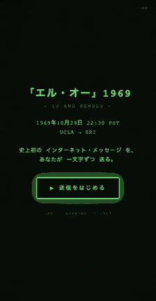
1969年10月29日 22:30 PST。UCLAの大学院生 チャーリー・クライン は、SRIの ビル・デュヴァル に電話越しで LOGIN と打とうとした。「L」が届いた。「O」が届いた。そして「G」を打った瞬間——SRIのIMPが落ちた。史上初のインターネット・メッセージは、「LO」 だった。1時間後、彼らは復旧し、フル LOGIN に成功する。CRTの緑光と50kbpsの専用線で、IMPからIMPへ走るパケットを、あなたが一文字ずつ送る——「LO and behold」、世界はネットワークを得た夜の1分。
▶ ブラウザで遊ぶ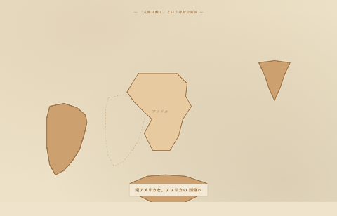
1912年1月6日、フランクフルト・ゼンケンベルク博物館。気象学者アルフレート・ヴェーゲナーは「大陸は動く」と発表した。証拠は4つ——海岸線の形、海を渡れないメソサウルスの化石、寒冷地のシダグロッソプテリス、放射状の氷河擦痕。地質学者は50年「ペテン師」と呼んだ。1930年、彼はグリーンランドの氷の上で死んだ。3分で南米・インド・南極をパンゲアに戻し、彼が見たものを見る。
▶ ブラウザで遊ぶ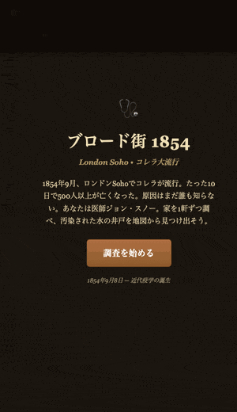
1854年9月、ロンドンSohoでコレラが大流行。たった10日で500人以上が亡くなった。誰も原因を知らない(コレラ菌の発見はこの後30年先)。あなたは医師ジョン・スノー。家を1軒ずつ叩いて死者を数え、地図に書き込み——汚染された井戸をデータだけで突き止めろ。ポンプの取っ手を外して流行は止まった。3分で近代疫学の誕生に立ち会う。
▶ ブラウザで遊ぶ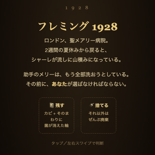
1928年9月、ロンドン聖メアリー病院。2週間の夏休みから戻ったフレミングは、流しに山積みのシャーレを見た。1枚にカビが生え——そのまわりだけ、ブドウ球菌が消えていた。彼は呟いた。「おかしいな……」。そのカビはPenicillium notatum。あなたはフレミング。助手が全部洗ってしまう前に、カビ＋菌が消えた輪のシャーレを見抜いて残す。捨てれば、何も生まれなかった。3分で、人類最大の偶然に立ち会う。
▶ ブラウザで遊ぶ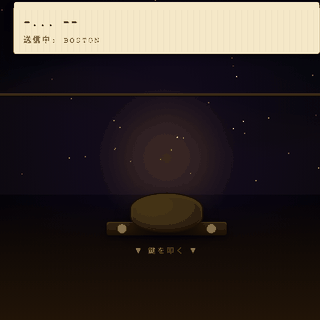
1859年9月1日、太陽が史上最大級の閃光を放った。翌夜、世界中の電信線が火花を散らし、操作員は感電し——そして電池を切っても、なぜか線は生きていた。空はキューバやハワイでも赤く燃えていた。あなたは電信局員。鍵を叩いて文字を送れ。嵐が、すべてを変える。3分のカリントン・イベント体験。
▶ ブラウザで遊ぶ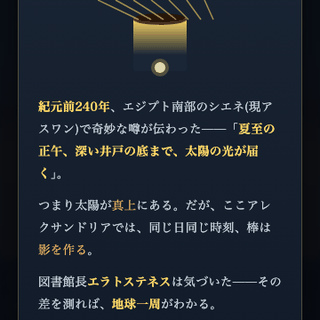
紀元前240年、エジプト南部のシエネで、夏至の正午に深い井戸の底まで陽光が届くという——太陽が真上にある証拠。だがアレクサンドリアでは同じ瞬間、棒は影を作る。アレクサンドリア図書館長エラトステネスは気づいた——その差を測れば、地球の大きさがわかる。あなたも棒を立て、影の角度を読み、ラクダのキャラバンで5,000スタディアを歩き、地球一周を計算する。誤差はわずか1.6%。紀元前240年に、棒一本で。
▶ ブラウザで遊ぶ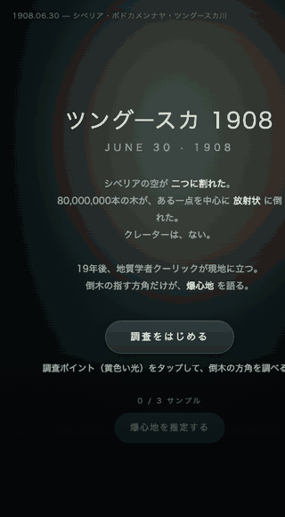
1908年6月30日、シベリア上空で空が 二つに割れた。8,000万本の木が放射状に倒れ、約 2,150 km² の森が一瞬で薙ぎ払われたのに——クレーターは、ない。19年後に現地に立ったクーリックは、倒木の方向だけを頼りに爆心地を割り出した。あなたも同じ方法で。調査ポイントを叩き、矢印（倒木の指す方角）を読み、爆心地を置く。3分の三角測量。
▶ ブラウザで遊ぶ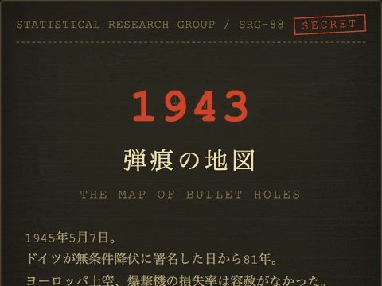
1945年5月7日ドイツ降伏記念日。1943年、コロンビア大学の統計学者アブラハム・ワルドは、爆撃機の装甲をどこに貼るかを決める任務を受けた。軍は帰還機の弾痕の多い場所に装甲を貼ろうとした——ワルドは逆を主張した。「装甲は、弾痕の少ない場所に貼れ」。なぜか。あなたが見ているデータは、生き残った者だけだから。3分で生存者バイアスを体で知る。
▶ ブラウザで遊ぶ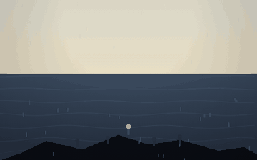
1841年1月、土佐の14歳の漁師・万次郎は嵐に遭い、絶海の孤島・鳥島に漂着した。雨を受けて水を、アホウドリを捕って食を。水平線をいくつもの船が通り過ぎる——のろしを上げても、ほとんどは気づかない。143日後、アメリカ捕鯨船ジョン・ハウランド号が止まる。そして1843年5月7日、彼は日本人として初めてアメリカ大陸に上陸した。今日からちょうど183年前。すべてのはじまりは、終わりに見える。3分の瞑想ゲーム。
▶ ブラウザで遊ぶ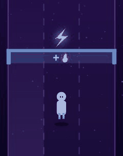
3レーンを駆け抜けるメモリーランナー。青いゲートを通るたびに、頭上に浮かぶ記号が記憶になる。やがて立ちはだかる橙のクイズゲートには3つのドア——「最初は？」「直前は？」「見ていないのは？」と問われたら、覚えた記号と合うレーンを選んで通り抜ける。間違えればライフが減り、3つ失えば走り終わり。走る速さと記憶の長さが、レベルが上がるごとに伸びていく。
▶ ブラウザで遊ぶ2026年5月3日、バンクーバーのアオサギが18cmの巨大牡蠣に爪を挟まれて救出されたニュースは、2300年前の故事『鷸蚌相争・漁夫の利』そのままだった。あなたはサギ。打ち寄せる小さな牡蠣を啄み、大きな牡蠣には触れない——挟まれた瞬間「離す」勇気が要る。墨絵の浜で90秒、執着が罠を作るという2300年来の智慧を体で知る。
▶ ブラウザで遊ぶ同じ確率を「読む」と「経験する」で、あなたは違う答えを出す——Hertwig (2004) が見つけた description-experience gap。3つのシナリオを2つの脳で2回ずつ判断し、自分の中の「みえない5%」を発見する3分の思考実験。Allais Memorial Prize 2026 受賞研究。
▶ ブラウザで遊ぶ戦争中、空からの『贈り物』が降ってきた——米軍の輸送機だった。1945年、彼らは去り、飛行機は来なくなった。タンナ島の儀式長として、竹で管制塔を建て、滑走路を整え、木のヘッドホンを彫れ。儀式を尽くせば飛行機は戻る——本当に？ Feynman『カーゴカルト科学』(1974) を3分で体験する、相関と因果の思考実験。
▶ ブラウザで遊ぶ2026年2月、市川市動植物園で生まれたパンチくんはぬいぐるみを離さなかった——70年前、ハーロウ博士が証明したこと。針金ママ（ミルク）と、ぬのママ（ふわふわ）。あなたはどちらに駆け寄りますか？ 接触安寧（contact comfort）を3分で体験する、心理学のミニ実験。
▶ ブラウザで遊ぶ1946年5月7日、ソニー（東京通信工業）が産声を上げた日。最初の製品は『米が炊けない電気釜』だった。配給米はバラバラ、電気は不安定、電極は腐食する——あなたも井深になり、失敗を重ねる。6回失敗すると現れる『ひらめく』ボタンは、この80年がそこから始まったことを教えてくれる、3分間のピボット体験。
▶ ブラウザで遊ぶ
1824年5月7日、ベートーヴェンは聴覚を失ったまま交響曲第9番の初演を指揮した。最終楽章が終わってもなお気づかず指揮を続けた彼を、ソプラノが振り向かせた——。あなたも音のない世界で指揮を執り、最後の瞬間に初めて『歓喜の歌』を聴く、3分の追体験。
▶ ブラウザで遊ぶSNSのフィードを3分だけ体験する認知実験。あなたの「いいね」を学習したアルゴリズムが、フィードをどれだけ早くあなた専用に絞り込むかを可視化する。終わると、止められないのは意志の弱さではなく設計の問題だと、自分のデータで気づく。
▶ ブラウザで遊ぶ2026年最大のミーム「虚無ペンギン」。群れを離れ、ひとり山へ向かったペンギンとなり、哲学的な選択を重ねる瞑想的ジャーニーゲーム。群れから離れるのは勇気か、愚かさか——あなたが決める。
▶ ブラウザで遊ぶ1518年ストラスブール。一人の女性が踊り始め、やがて400人に——。街の長として施策を打つが、「もっと踊らせれば治る」という当局の判断は事態を悪化させた。症状と根本原因の違いを体感する歴史戦略シミュレーション。
▶ ブラウザで遊ぶ「もったいない」が冒険者を破滅させる。ダンジョンの奥には伝説の財宝——でも進むほどリスクは増す。ゲーム自体があなたを心理的に操り、最後にその手口を全て暴露する。サンクコストの罠を体で知るローグライクRPG。
▶ ブラウザで遊ぶ北海道大学の苔胞子・宇宙生存実験に着想。あなたは宇宙を漂う胞子。タップで休眠し宇宙線を防ぎ、離して光を吸収。ほとんどのゲームは「動け」と言う——このゲームは「止まれ」と言う。
▶ ブラウザで遊ぶ2026年の41万本キットカット強奪事件にインスパイア。トラックからキットカットを盗め——でも欲張りすぎると警察に捕まり全没収。「いつ逃げるか」が全て。足るを知る者は富む。
▶ ブラウザで遊ぶ
生年月日から運命数・誕生日数・個人年数を算出する数秘術アプリ。マスターナンバー(11/22/33)対応で、性格・恋愛・仕事・ラッキー要素まで詳しく表示。プロの占い師にも。
▶ ツールを使うAIの同居人Alexが英語で話しかけてくる！マイクで返事するか、タイプしてもOK。日本語で答えても英語に直してくれる。自動で会話を始めてくれるから、気づいたら英語を話してる。
▶ ブラウザで遊ぶ